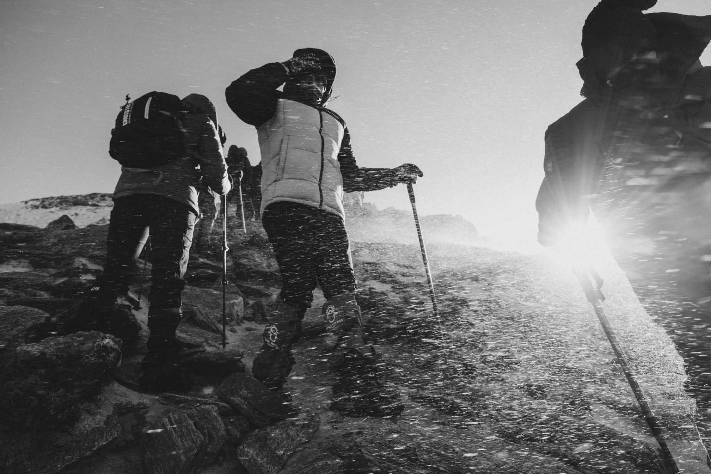

Adventure Trails Hikes – Where Culture Meets Wilderness
We’re a passionate team of adventurers, cultural experts, and environmental advocates committed to transforming hiking into a deeper experience.
At Adventure Trails Hikes, we connect travelers to the land and its people. Our mission is to provide unforgettable treks that celebrate nature, heritage, and sustainability.
We cater to college-educated professionals aged 18–35 who seek more than just a vacation. Our tours combine rigorous trails with enriching cultural encounters.